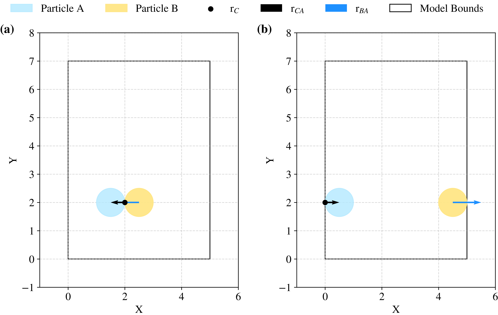

Complete
pysammos.data_handle.contacts.complete package
Subpackage for completing contact data with additional information, such as branch vectors and coordination numbers.
Branch Vectors module
pysammos.data_handle.contacts.complete.branch_vectors module
Periodic boundary corrections along each axis using the Minimum Image Convention (MIC), by which displacements are calculated to the nearest periodic equivalent, as showen in the figure below.
{kind=link}

Example of minimum image convention. Two-dimensional illustration of the application of the Minimum Image Convention (MIC) for particle pairs located well within the model domain (a) and interacting across periodic boundaries (b). In case (b), displacement vectors are computed using the nearest periodic image. All particles have identical radius (\(r = 0.5\)). The contact point, \(r_C\), is defined on particle \(A\) (purple) and is depicted with a black point. The branch vector from the contact point to the centre of particle \(A\), \(r_{CA}\), is shown by the black arrow, while the vector from the centre of particle \(B\) (red) to the centre of particle \(A\), \(r_{BA}\), is indicated by the blue arrow. The boundaries of the model domain are delineated by the black box.
This module provides functions to calculate branch vectors and center-to-center vectors between particles in a simulation, considering periodic boundary conditions. It includes two main functions:
from_contacts(): Computes branch vectors from contact positions.
from_diameters(): Computes branch vectors based on particle diameters.
These functions handle periodic boundary corrections to ensure accurate vector calculations in simulations with periodic boundaries.
- pysammos.data_handle.contacts.complete.branch_vectors.from_contacts(r_A, r_B, contact_A, L, periodic)[source]
Computes the branch vector \(\mathbf{B_v}\) from the center of particle A to its contact point, as well as the center-to-center vector \(\mathbf{d}\) between particles A and B. It uses the position of the contact between the two particles. The function handles periodic boundary corrections along each axis.
Let:
\(\mathbf{r}_A\), \(\mathbf{r}_B\) be the center positions of particles A and B.
\(\mathbf{c}_A\) be the contact point on particle A.
\(\mathbf{L}\) be the domain size.
\(\mathbf{p}\) be the periodicity flags (True/False) per dimension.
The branch vector is computed as:
\[\mathbf{B_v} = \mathbf{r}_A - \mathbf{c}_A\]And the center-to-center vector is:
\[\mathbf{d} = \mathbf{r}_A - \mathbf{r}_B\]Periodic corrections are applied:
\[\mathbf{d}_i \leftarrow \mathbf{d}_i - L_i \cdot \mathrm{round}\left(\frac{\mathbf{d}_i}{L_i}\right)\]for each dimension \(i\) where periodicity is enabled.
Inputs
- r_Andarray, shape (N, 3)
Center positions of particle A.
- r_Bndarray, shape (N, 3)
Center positions of particle B.
- contact_Andarray, shape (N, 3)
Contact points on particle A.
- Lndarray, shape (3,)
Domain dimensions.
- periodicndarray, shape (3,)
Boolean array indicating periodicity in each spatial dimension.
Outputs
- BVndarray, shape (N, 3)
Branch vectors from particle A center to contact point.
- dndarray, shape (N, 3)
Center-to-center vectors between particles A and B.
Examples
Given two particles A and B with positions and a contact point on A, the branch vector and center-to-center vector can be computed as follows.
>>> r_A = np.array([[1, 2.0]]) >>> r_B = np.array([[2, 2.0]]) >>> contact_A = np.array([[1.5, 2.0]]) >>> L = np.array([3.0, 3.0]) >>> periodic = np.array([True, True]) >>> BV, d = from_contacts(r_A, r_B, contact_A, L, periodic) >>> print("Branch Vectors:\n", BV) Branch Vectors: [[-0.5 0. ]] >>> print("Center-to-Center Vectors:\n", d) Center-to-Center Vectors: [[-1. 0. ]]
- rtype:
Tuple[ndarray,ndarray]
- pysammos.data_handle.contacts.complete.branch_vectors.from_diameters(r_A, r_B, d_A, d_B, L, periodic)[source]
Computes the branch vector \(\mathbf{B_v}\) from the center of particle A to its contact point, as well as the center-to-center vector \(\mathbf{d}\) between particles A and B. It uses the position of the two particles and their diameters. The function handles periodic boundary corrections along each axis.
Given:
\(\mathbf{r}_A, \mathbf{r}_B\) — positions of particles A and B
\(d_A, d_B\) — diameters of particles A and B
\(\mathbf{L}\) — domain lengths
\(\mathbf{p}\) — periodic boundary flags
The center-to-center vector is:
\[\mathbf{d} = \mathbf{r}_A - \mathbf{r}_B\]After applying periodic corrections:
\[\mathbf{d}_i \leftarrow \mathbf{d}_i - L_i \cdot \mathrm{round}\left(\frac{\mathbf{d}_i}{L_i}\right)\]The branch vector from the center of particle A to the contact point is:
\[\mathbf{BV} = \mathbf{d} \cdot \frac{d_A}{d_A + d_B}\]Inputs
- r_Andarray, shape (N, 3).
Center positions of particle A.
- r_Bndarray, shape (N, 3).
Center positions of particle B.
- d_Andarray, shape (N,).
Diameters of particle A.
- d_Bndarray, shape (N,).
Diameters of particle B.
- Larray_like, shape (3,).
Domain dimensions.
- periodicarray_like, shape (3,).
Periodicity flags (True/False) for each axis.
Outputs
- BVndarray, shape (N, 3).
Branch vectors from particle A to contact points.
- dndarray, shape (N, 3).
Periodically corrected center-to-center vectors.
- rtype:
Tuple[ndarray,ndarray]
Coordination Number module
pysammos.data_handle.contacts.complete.coordination_number module
This module provides functionality to calculate the coordination number of particles based on their contacts. It counts the number of contacts for each particle and excludes isolated particles (rattlers) that have fewer than two contacts.
It uses Numba for efficient computation, especially for large datasets.
- It includes one main function:
count(): Counts the number of contacts per particle and excludes isolated ones.
- pysammos.data_handle.contacts.complete.coordination_number.count(particle_inContacts_dup, global_id_all)
Count the number of contacts per particle and exclude isolated ones.
Counts the number of times each particle ID appears in the contact list, returning both the full list and the filtered one (excluding particles with fewer than two contacts).
- Return type:
Tuple[ndarray,ndarray]
Inputs
- particle_inContacts_dupndarray, shape (N,).
Array of particle IDs involved in contacts (may contain duplicates).
- global_id_allndarray, shape (M,).
List of all particle IDs for which coordination numbers are computed.
Outputs
- CNndarray, shape (M,).
Coordination numbers (number of contacts) for each particle in global_id_all.
- CN_no_rattlersndarray, shape (K,).
Coordination numbers excluding "rattlers" (particles with <= 1 contact).
Example
>>> particle_inContacts_dup = np.array([1, 2, 1, 2, 1, 3]) >>> global_id_all = np.array([1, 2, 3]) >>> CN, CN_no_rattlers = count(particle_inContacts_dup, global_id_all) >>> print(CN) # Output: [3 2 1] >>> print(CN_no_rattlers) # Output: [3 2]